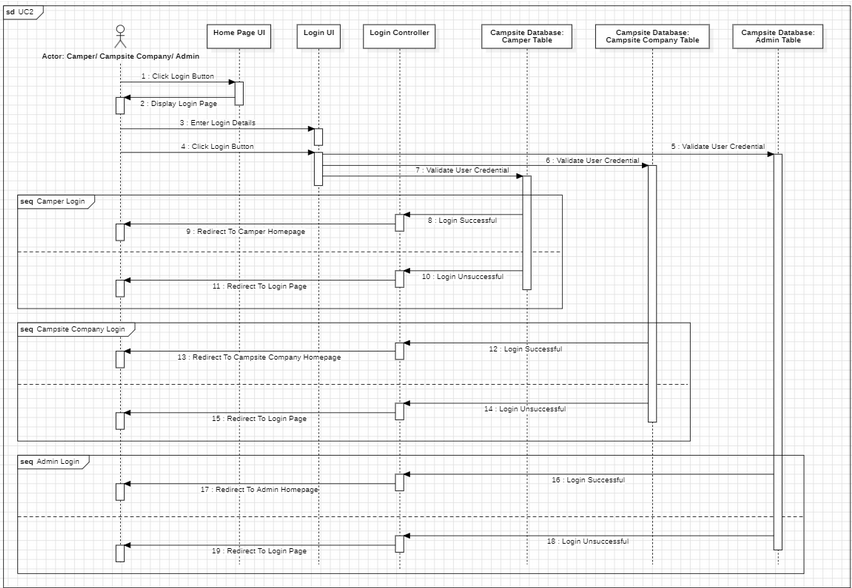
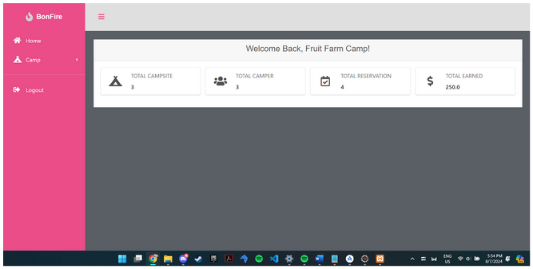

Project Documentation
Below you can find a simple documentation to some of my previous projects. You can find information about tools/language that I use, link to references, as well as general info about the project features. If you have any additional questions, feel free to email to aisyaina02@gmail.com for clarification.
My Portfolio Website – Yep, this website!
- Analyse
So, the project starts with me thinking 'Oh, I want to create a personal portfolio to showcase my projects and resume'. The idea at this point is hazy at best, but after referencing several portfolio site, I thought about putting my face in the site, Image carousel and a Project Page. Everything else is just add ons.
- Design
- Development
- Implementation
- Evaluation
The wireframe, design is made in figma, solidifies my idea durther. it may not look That similar to the end product but what's a little difference here and there in personal project, right? The main accent of the website is my favourite colour green and complemented by the colour of salmon red since it complements the light teal so good.
I think it's cute to include a logo too, at first I want it drawn but I simple shapes suits the website more, and made these in Figma. If you hover the icon on top of the website page , The skull will peek at you, try it right now! The skull is also the favicon of the site.
I used HTML, CSS and JavaScript in VSCode. There's several features that struck as my favourite in this; First of all, something about the colour choices complimenting the green really scratch an itch and I'm really happy how the overall look turns out.
Of course, the image carousel, I'm a bit dissatisfied since I can't figured out how it can turn seamlessly, but overall I'm happy to learn how to create one that I can put my art no matter what size they are.

Another favourite is the snap to each section *cheff kiss*.

I push the site live on GitHub Pages and I include the link in the resume.
Asked my roommate for improvement, they gave a feedback to create a version for mobile browser too, which I will definetely do later! Thank you Aisy!
The Ripe Pick – A mobile application to evaluate fruit ripeness
- Concept Phase
- Inception Phase
- Iteration Phase
- Testing Phase
- Release Phase
This is my Final Year Project and I will explain Very very briefly since it can get pretty long if I get into the thick of it. After doing literature review of real life problems. I land on interesting topic of food waste, or more specifically, fruit waste. People tends to get rid of fruit for cosmetic imperfections as they mistook it for ripening, in field traditional assessment also can prone to human error. On this topic, I will created a CNN model that accessible to their phone to help this problem.
I plan out software and hardware requirements.The datasets is scraped form the web and taken from sites like kaggle and roboflow. I used 3000 images to assess ripeness of banana, mango and papaya. I was targetting the local fruits, however I can only limit to these three due to time and money constraints. Low fidelity storyboard was also created and a flowchart to make the idea more clearer
I sectioned my works in multiple sprints, First building and train the model in Jupyter. After crashing for at least 3 times between it's epoch, the model is loaded and achieve 80%+ (84%) accuracy
Then I use REST API to deploy the server on Google Cloud Server. This is later check with POSTMAN to check if the predict() is working

Lastly, the development of mobile app, the framework is mcreated on figma, and the development is made in Android Studio (java)
System Usability Scale (SUS) Questionnaire is used to get evaluation from the Target User which is 15 everyday consumers, 10 vendors and 10 growers. I will post the data anaysris of testing after I finish conducting it
This is a Final Year Project and belongs to UiTM and won't be released, the cycle stops here.
Bonfire Camp Management System
Bonfire Camp Management is an elaborate system, it was born from 4 people overly ambitious with their class projects. Shoutout to my friend Syafiqah who is the backbone of this project and manage to make it happen.
The system manage 3 users interact with the database. The users will log in with unique id and the system will recognize and give access whethere its a camper, campsite manager or database admin as shown in sequence diagram.
To put it simply, in this site, admin can manage the system by adding, deleting and edit records on the registered company and customers.
The camper can search up available sites and reserve
The camp company can check their campsite, number of reservation and their total earnings
